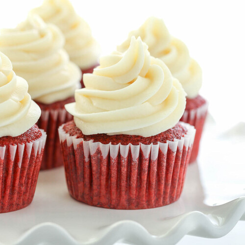

Red Velvet Cupcake Recipe
<
back to home

Bake a batch of red velvet cupcakes as a treat. With chocolate sponge and a cream cheese topping, they're perfect for elevenses served with a cuppa
Ingredients
- 150g plain flour
- 1 tbsp cocoa powder
- 1 tsp bicarbonate of soda
- 50g butter, softened
- 150g caster sugar
- 1 large egg, beaten
- 1 tsp vanilla paste
- 100ml buttermilk or kefir
- 50ml vegetable oil
- 1 tsp white wine vinegar
- 1 tbsp red gel food colouring
For the cream cheese icing
- 100g slightly salted butter , softened
- 225g icing sugar
- 100g full fat cream cheese , stirred to loosen
Steps
- Line a cupcake tin with 12 cupcake cases and set aside. Heat oven to 180C/160C fan/gas 4. Sieve the flour, cocoa, bicarb and a pinch of fine salt into a medium bowl and mix to combine.
- Using a stand mixer or an electric hand whisk, beat together the butter and sugar until light and fluffy, then beat in the egg, vanilla, buttermilk, oil and vinegar until combined. Gradually mix the wet ingredients into the dried. Once combined, mix in the red food colouring until you have a deep red mix – the colour may vary depending on what brand you use.
- Divide the batter between the cupcake cases and bake for 15 mins, or until a skewer inserted into the centre of a cake comes out clean.
- While the cakes are cooling, make the icing. Beat together the butter and icing sugar using an electric whisk or by hand until pale and fluffy, about 3 mins, then beat in the cream cheese for a further 1-2 mins until well combined.
- Once the cakes are cool, use a piping bag fitted with a star nozzle to cover the cakes with the cream cheese icing, or dollop the icing on top using a spoon.